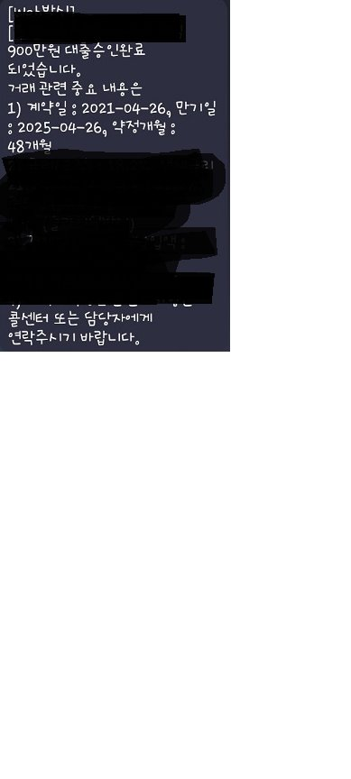

[직장인대출] 직장인 대출후기
사대보험 o
재직기간 3년
기대출
마이너스 통장 1000만원
2금융 1800만원
4금융 1200만원
자동차 담보대출 600만원
정부자금 1800만원
통합대출과 추가대출을 같이 알아보았습니다
이틀정도 소요되었고 자서를 조금 늦게쓰는바람에 입금을 하루뒤에받았습니다
대출건수는 한건이 추가되어 당장 신용점수는 하락했지만..
4금융을 자력으로 해결한후에 통합을 다시 알아보려고 합니다..
제가 통화가 원활하지가 않아서 중간에서 최규열 이사님께서 많이 고생하셨습니다
그리고 귀찬은 내색없이 잘 기다려주시고 제 입장을 헤아려 주셔서 감사합니다
입금은 4월 후반에 받았으나 이사하고 하느라고 정신이 없어서 이제야 올립니다
신경써주셔서 감사합니다
관리잘해서 통합다시한번 시도하겠습니다

나머지는 개인정보가 포함되어 가렸습니다
[출처] 직장인 대출후기 (뱅크앤론 (직장인대출,개인회생자대출,개인회생대출 등..)) | 작성자 카미